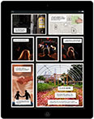
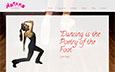
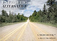
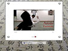
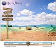
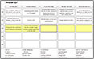
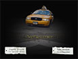
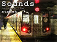

description
company
present
Sustnrs Multimedia instructional guides to sustainable lifestyle practices, for the web and devices.
2012 to Present
- Lead a team of interns and volunteers in publishing educational content that raises awareness of sustainability and green living techniques.
- Plan instructional videos and webpages, create storyboards, code HTML and CSS layouts, shoot photos and videos, and write text content.
Computer Training Source Chicago area computer training classes in Adobe, Microsoft, and more.
Digital Media Instructor
2010 to Present
- Lead adult learners in hands-on training sessions for a range of computer skills,
including Adobe Creative Suite, HTML/CSS, and WordPress, with class sizes from 5 to 20 students.
- Write lesson plans, design custom activities for application-specific skills, create
handout materials to supplement coursebooks, and produce PowerPoint presentations.
Helix River Media, L3C Digital media publishing company specializing in educational content.
Founder and Director
2008 to Present
- Design, develop, and publish interactive, educational content for the web and
mobile devices.
- Plan content production, create storyboards, direct instructional videos, capture
photos, program HTML5 & CSS3 layouts, and manage WordPress sites.
Martorell Language School Language school outside Barcelona, providing classes in English, Spanish, German, and other languages.
EFL Instructor
2007 to 2008
- Designed curriculum plans to meet specifi�c learning objectives for a range of
learners and skill levels.
- Taught in-company English classes, including private lessons for executives,
business English lessons for adults, and Cambridge FCE prep.
2008
2007
Costa Cruises Italian cruise line owned by American/British company, with cruises around the Mediterranean and beyond.
EFL Program Manager / Instructor
2006
- Installed and managed English Language Program on two diff�erent cruise ships;
designed curriculum and class materials.
- Taught general and ESP classes with multi-national adult learners in hospitality
departments; assisted learners with asynchronous computer-based program components.
U2i Web technology consulting company based in New York, with overseas offices in Krakow.
Business Manager
2004 to 2005
- Managed all levels of business operations, including training/supervision of
administrative staff�, vendor relations, immigration, and bookkeeping.
- Spearheaded formation of new foreign branch of company in Krakow, Poland.
- Contributed to graphic design initiatives for clients such as Sesame Workshop and
Freshpair.com.
The Far Corner Interactive website and blog about my experiences driving a Yellow Cab in New York City.
Web Designer / Writer / Taxi Driver
2002 to 2004
- Wrote a series of short stories, shot photos around the city, and created interactive web content.
2004
2003
2002
Argonaut Productions Video production company founded for the purpose of documenting the voyages of Captain Reid Stowe.
Associate Producer
2000 to 2001
- For "Search for the Argonauts," shot photos, maintained digital video logs, wrote press release, and designed promo materials.
- Planned and shot a documentary, "Sounds beneath the Street." Sketched storyboards, interviewed musicians, and designed promo materials.
2001
2000

Prototype of multimedia graphic novel about urban agriculture.
2014
- design
- code
- writing
- animation
- photography
Series of interactive guides to sustainability at home.
2014
- direction
- code
- writing
- photography
Series of video recipes with interactive webpages.
2014
- direction
- design
- code
- writing
Series of instructional guides to creating websites with WordPress.
2014
- design
- code
- writing
- video
Series of videos and infographics about food and nutrition.
2013 to 2014

WordPress website creation for dancer and dance teacher.
2014
- direction
- WordPress
- photography
Sample mediaBook called Seed Starting Outdoors.
2013
- direction
- code
- writing
- layout design
- photography

Sample mediaBook about local and organic food.
2012
- direction
- writing
- layout design
- photography
- video

An instructional mediaBook on the martial art aikido.
2009 to 2010
- direction
- writing
- layout design
- photography
- video

First version of helixriver.com, full on Flash goodness, is launched.
2008
- writing
- design
- Flash
- code
- photography

EFL exercises, discussions, tests, and other resources.
2006
Variety of totally random short fiction.
2004 to 2005

Series of multimedia stories about my taxi driving experiences.
2002 to 2004
- writing
- design
- code
- photography

A documentary about New York's subway musicians.
2001 to 2002
- writing
- design
- code
- video
A documentary about Captain Reid Stowe's 1000 day sailing voyage.
2000 to 2001
- writing
- design
- code
- photography
Education
University of Florida
Bachelor of Science, Psychology
Minors in Spanish, Business Administration
1994 to 2000
Study Abroad Programs
Thames Valley University, London, England
Institute of International Studies, Seville, Spain
1997 to 1998
Certification
Adobe
ACE (Adobe Certified Expert)
Photoshop CS5
2011
International House Mallorca, Spain
Cambridge CELTA
(Certificate in English Language Teaching to Adults)
2005
Aptitudes
Software & Web
Photoshop > 95%
Dreamweaver > 90%
InDesign > 75%
Acrobat > 75%
Illustrator > 50%
HTML/CSS > 95%
UI design > 90%
WordPress > 92%
JavaScript > 30%
Premiere > 65%
Microsoft Office > 98%
Languages
Spanish > 90%
Italian
English > 99.99%
{kind=link}
{kind=link}
{kind=link}
{kind=link}
{kind=link}
{kind=link}